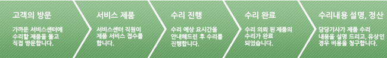
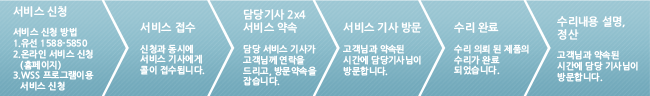
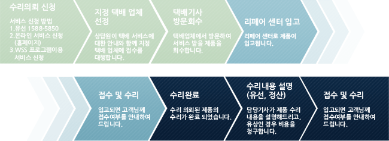
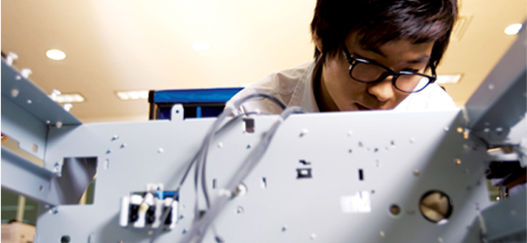
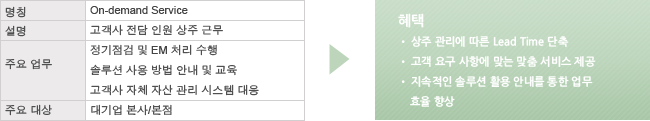
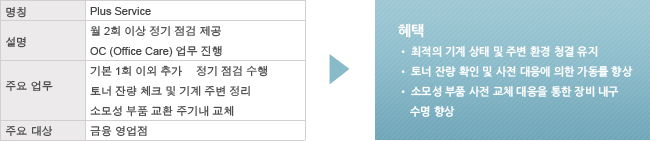
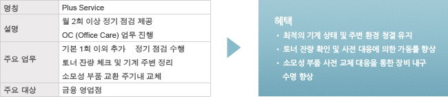
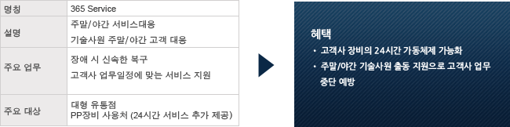

- 구매일자를 기준으로 산정하며 구매일자 확인은 품질보증서(구입영수증)에 의거합니다.
- 제품 구매일자의 확인이 불가능한 경우에는 제조일로부터 3개월이 경과한 날로 품질보증기간을 산정합니다.
- 보증기간 또는 사용매수(복사,출력) 중 먼저 도래한 것을 우선으로 적용하며 불량발생시 소모성부품 (PCU,드럼,현상제,정착부,전사부)에 대한 크레임 기준은 당사가 정한 기준으로 처리 됩니다.
- 별도의 서비스 계약,조달계약을 체결한 경우에는 계약서에 명기된 보증기간을 적용합니다.
- 부품보유기간은 제품 단종후 5년입니다.(프린터 4년-2004년11월 소비자보호법개정)
- 소모품 보유기간은 제품단종후 별도의 보유기간을 두지 않습니다.
| 구분 | 품질보증기간 | |
|---|---|---|
| 기종 | 모델명 | |
| 디지털 복합기 | DGwox 전체모델 (1023.28.33/1123.28.33/2023.28.33/4025/4030/4125P/4130P) | 6개월/60,000매 이내(모두 충족시) |
| Aficio 3300/3010 | 1년/60,000매 이내(모두 충족시) | |
|
1년/30,000매 이내(모두 충족시) | |
| Aficio 3035/3045 | 1년/60,000매 이내(모두 충족시) | |
| Aficio MP 3500/4500 | 1년/90,000매 이내(모두 충족시) | |
| Aficio MP 4000(B)/5000(B) | 1년/70,000매 이내(모두 충족시) | |
| Aficio 2060/2075 | 1년/30,000매 이내(모두 충족시) | |
| Aficio MP 6500/7500 | 1년/90,000매 이내(모두 충족시) | |
| Aficio MP 2500/2580 | 1년/60,000 매 이내-컬러, 모노 포함 (모두 충족시) | |
| Aficio MP 2000/2082 | 1년/30,000매 이내-컬러, 모노 포함 (모두 충족시) | |
| Aficio MP 6000/7000/8000 | 1년/90,000 매 이내-컬러,모노 포함 (모두 충족시) | |
| 디지털 컬러 복합기 | Aficio 2232C/2238C | 1년/60,000 매 이내-컬러,모노 포함 (모두 충족시) |
| Aficio 3228C/3235C | ||
| Aficio 3224C/3232C | ||
| Aficio 3245C | ||
| Aficio MP C2500/C3000 | ||
| Aficio MP C3500/C4500 | ||
| Aficio MP C2800/C3300 | ||
| Aficio MP C1500 | 1년/30,000매 이내-컬러,모노 포함 (모두 충족시) | |
| Aficio MP C2030/C2050/C2530/C2550 | ||
| Aficio MP C4000/C5000 | 1년/90,000 매 이내-컬러,모노 포함 (모두 충족시) | |
| 복사기 | CONDOR, NT-4000 SER,ST-5000 SER | 6개월/60,000매 이내(모두 충족시) |
| A4 복합기 | MF 2450/2500/2500S | 1년 |
| MF 1160/2160/3160 | ||
| SP C222SF | ||
| MF 4550/4550L | 1년/60,000매(모두 충족시) | |
| MF 4550H | 1년/90,000매(모두 충족시) | |
| MFC-7820 | 1년 | |
| MF C2250 | ||
| MF C3530 | ||
| 팩시밀리 | 전기종 | 1년 |
| 프린터 | 전기종 | 1년 |
- 당사가 지정한 소모품 외에 재생, 리필 및 타사의 토너와 부품을 사용하여 문제가 발생한 경우
- 화재, 수해, 낙뢰, 지진 기타 예기치 못한 사고 등의 천재지변에 의한 불량인 경우
- 신도리코 제품 불량이 아닌 PC, Network, 공유기 등에 의한 불량인 경우
- 제품 이상이 아닌 소모품이나 소모성 부품의 수명이 다해 교체해야 하는 경우
- 사용자의 고의나 사용상의 필요에 의한 운반, 파손, 이동, 설치 등에 의한 문제가 발생한 경우
제품별 서비스 지원안내를 참고하여 고객상담실 및 서비스 센터를 이용해 주시기 바랍니다.
| 구분 | 서비스 대응 | 처리방식 | |
|---|---|---|---|
| 제품군 | 해당 기종 | ||
| 디지털 복합기 |
|
서비스 센터 | 출장서비스 |
|
|||
| 흑백 A4 복합기 | 전기종 | DG 센터 | |
| 컬러 A4 복합기 | |||
| 흑백 레이저 프린터 | 전 제품 (택배 대상 제품 제외) | ||
| 팩시밀리 | |||
| 흑백 레이저 프린터 |
|
리페어센터 | 택배서비스 |
| 팩시밀리 |
|
||
| 흑백 레이저 프린터 |
|
센터 내방 | 택배서비스 |
- 전 서비스센터 내방 수리 가능
- 서비스 요청은 콜센터 접수 (1588-5850)
- 16시 이후 접수 건은 익일 대응 원칙
내방수리는 고객이 제품을 가지고 서비스센터에 직접 방문하여 받는 서비스입니다.신도리코는 고객과 파트너에게 최고의 서비스를 제공하고자, “2x4 SDS ”를 실천합니다. 전 서비스센터에서 내방 수리가 가능합니다.
- 2x4 SDS ( Sindo Depot Service)
-
- 평일 - 오전 9시~오후 6시
- 토, 일요일 및 공휴일 휴무



출장수리는 서비스 기사가 제품을 사용하고 있는 고객의 댁이나 회사로 방문하여 수리하는 것입니다. 신도리코는 고객과 파트너에게 최고의 서비스를 제공하고자, “2x4 SOS”를 실천합니다.
- 2X4 SOS(Sindo Onsite Service)
-
- 출장서비스 요청 접수 후 2시간 이내 방문
- 4시간 내 처리 완료

| 구분 | 소재지 |
|---|---|
| 광역시 | 서울, 인천, 대전, 대구, 부산, 울산, 광주 |
| 경기도 | 부천, 시흥, 안산, 용인, 의왕, 안양, 군포, 성남, 광주, 의정부, 구리, 고양, 김포, 오산, 양평 |
| 충청도 | 청주, 제천, 음성, 아산, 천안 |
| 강원도 | 원주, 삼척, 춘천 |
| 경상도 | 창원, 마산, 거제, 양산, 경주, 구미, 안동, 포항 |
| 전라도 | 남원, 군산, 고창, 광양, 나주, 목포, 순천, 전주 |
| 제주도 | 제주 |
택배수리는 제품을 택배로 서비스센터로 배송하여 수리완료 후 고객에게 배달하는 서비스입니다.
- 당일 처리 원칙 (RPC 입고 기준)
- 신도리코 지정 업체 이용 시 무상보증기간 내 택배 비용 신도리코 부담고객 요청 시 퀵서비스 이용 가능.(추가 비용 고객 부담)

- 중요 참고사항
- • 서비스 요금 = 기술료(설치 지도료) + 부품비
- 신도리코의 서비스 요금 체계는 기술료, 부품비는 합계액으로 구성됩니다. 또한 제품의 구매, 기기 이동, 중고기 구매 등에 따른 설치 및 사용법에 대한 지도료는 아래의 설치지도료에 준하여 비용을 청구합니다.
- 본 내용은 2011년 11월1일부로 적용됩니다.
- 단, 아래의 경우에는 기술료(설치 지도료)가 추가 청구될 수 있습니다.(VAT별도)
| 구분 | 요금기준 | |
|---|---|---|
| 이동시간 | 편도 30분 이상 (30km 이상) | 초과 10km당 5,000원 추가 |
| 도서지역 | 도선료, 항공료, 숙박료 | 실비 적용 |
| 구분 | 기술료 | ||
|---|---|---|---|
| 제품군 | Grade | 기종군 및 대표기종 | |
| 복사기 | 보급기 |
|
40,000 |
| 고급기 |
|
||
| 디지털 복합기(흑백) | 보급기 |
|
40,000 |
| 중급기 |
|
||
| 고급기 |
|
50,000 | |
| 고속기 |
|
70,000 | |
| 디지털 복합기(컬러) | 보급기 |
|
50,000 |
| 중/고급기 |
|
70,000 | |
| 디지털 복합기(A4) | 보급기 |
|
30,000 |
| 고급기 |
|
40,000 | |
| 컬러기 |
|
50,000 | |
| 레이저 프린터 | 보급기 |
|
30,000 |
| 고급기 |
|
40,000 | |
| 컬러기 |
|
50,000 | |
| 팩시밀리 | 잉크젯 써멀 |
|
30,000 |
| 레이저 |
|
||
| 피니셔 (옵션) | 중급기 | SR 790/820/3010 | 40,000 |
| 고급기 | SR 830/880/890/3020/3030, C 2550 | 50,000 | |
| 고속기 | SR 841/842/850/861/910/920/970/3000/3050/4000 | 70,000 | |
| PC 및 네트워크 | PC 및 네트워크 최적화, 바이러스 제거, 각종 드라이버 설치 등( 3대 이상 작업 시, 추가 PC 1대당 15,000원 청구 ) | 30,000 | |
| 구분 | 기술료 | 옵션 | ||
|---|---|---|---|---|
| 제품군 | Grade | 기종군 및 대표기종 | ||
| 복사기 | 보급기 |
|
40,000 | 20,000 |
| 고급기 |
|
|||
| 디지털 복합기(흑백) | 보급기 |
|
40,000 | 20,000 |
| 중급기 |
|
|||
| 고급기 |
|
60,000 | 20,000 | |
| 고속기 |
|
50,000 | 20,000 | |
| 디지털 복합기(컬러) | 보급기 |
|
50,000 | 20,000 |
| 중/고급기 |
|
60,000 | 20,000 | |
| 디지털 복합기(A4) | 보급기 |
|
30,000 | 20,000 |
| 중급기 |
|
35,000 | 20,000 | |
| 컬러기 |
|
40,000 | 20,000 | |
| 레이저 프린터 | 보급기 |
|
30,000 | 20,000 |
| 고급기 |
|
35,000 | 20,000 | |
| 컬러기 |
|
40,000 | 20,000 | |
| 팩시밀리 | 잉크젯써멀 |
|
30,000 | 20,000 |
| 레이저 |
|
|||
| 드라이브, 유틸리티 | PC 1대 ( 단, 신도리코 기계 설치 시 PC 1대는 무상 지원 ) | 15,000 | 15,000 | |

 

